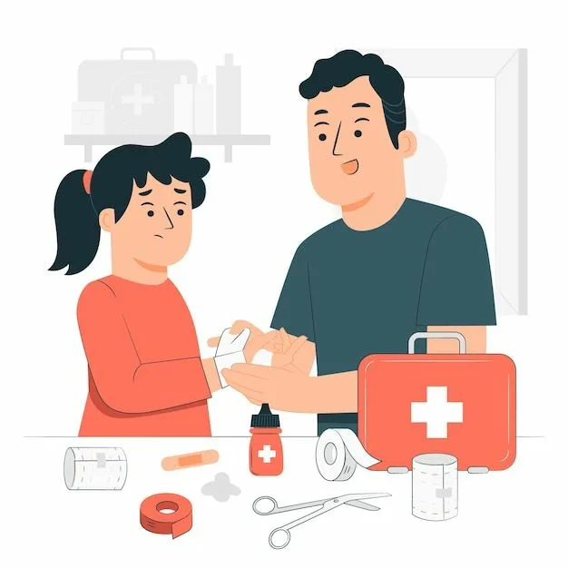
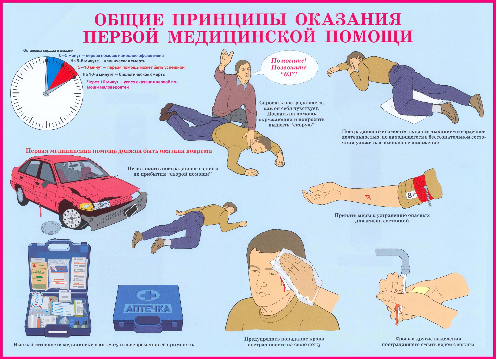

Главная
Первая помощь — это комплекс срочных мер, направленных на спасение жизни человека при несчастных случаях, острых заболеваниях или отравлениях. Её может оказать любой человек, находящийся рядом с пострадавшим, до прибытия медиков или доставки пострадавшего в больницу.

Принципы оказания первой помощи
Безопасность. Прежде всего необходимо убедиться, что при оказании помощи вам ничего не угрожает, и обеспечить безопасность пострадавшему и окружающим. Например, извлечь человека из горящего автомобиля или опасной зоны.
Быстрота. Первая помощь должна быть оказана незамедлительно — от этого часто зависит исход ситуации. При остановке кровообращения или дыхания время на оказание помощи сокращается до 5 минут.
Правильность и целесообразность. Действия должны быть направлены на устранение непосредственной угрозы жизни и предотвращение осложнений. Нельзя превышать свою квалификацию — например, вправлять вывихи или назначать лекарства.
Последовательность. Необходимо соблюдать чёткий алгоритм действий, чтобы не пропустить критические моменты.
Психологическая поддержка. Важно успокаивать пострадавшего, поддерживать с ним словесный контакт, снижать уровень стресса.
